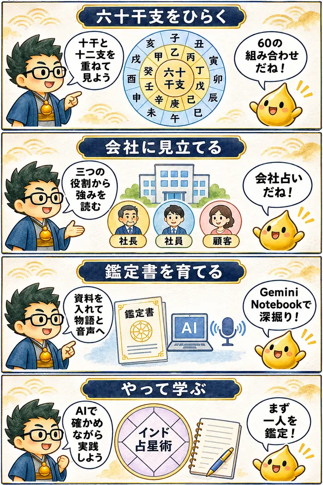

第4期 Zoom講座・第4回
六十干支と会社占い・AI鑑定書とGemini Notebook・インド占星術
この回の要約
六十干支を会社占いへ広げ、AIで鑑定書を作り、資料を物語や音声へ育てる実践回。
六十干支を会社占いへ広げ、AIで鑑定書を作り、資料をGemini Notebook（旧NotebookLM）で物語や音声へ育てます。後半ではインド占星術を「覚えてから始める」のではなく、鑑定と質問を繰り返しながら学ぶ手順を確認します。
分類だけで相手を決めず、今知りたいことを聞いてから鑑定の言葉を選ぶことが、この回を通した軸です。
4コマ漫画でつかむ

タイムスタンプ
時間を押すと、上の動画がその場面から再生されます。
質疑応答
※ 自動書き起こしをもとに、学習用に整理・再構成しています。吹き出しは逐語引用ではありません。
三つの干支アニマルを会社の役割で見る
11:21から見る ▶干支アニマルを、会社占いではどう使いますか？
三つの動物を、社長・社員・顧客のような役割へ見立てます。感性、働き方、対人関係の違いを一つずつ確認します。
持ち帰り：三つの結果を優劣で並べず、それぞれが担う役割として読む。
先に「今、何を知りたいか」を聞く
19:14から見る ▶結果が出たら、すぐ説明を始めてもいいですか？
まず困っていることや、今回知りたいことを聞きます。目的が分かると、たくさんの結果から必要な言葉を選べます。
持ち帰り：鑑定前に「今日は何が分かると役立ちますか」と一つ質問する。
鑑定書を、読む人に合う形へ変える
43:11から見る ▶長い鑑定書は、どう渡すと伝わりやすいですか？
文字で読む人には文章で、読みづらい人には音声で渡します。Gemini Notebookへ資料を入れると、物語や音声へ展開できます。
持ち帰り：同じ鑑定内容を、文章・短い要約・音声の三つから相手に合う形で届ける。
インド占星術は、鑑定しながら覚える
1:28:11から見る ▶専門用語を覚えてからでないと、鑑定できませんか？
先に結果をAIへ入れ、分からない言葉を質問しながら鑑定します。実例と結びつけてからテキストへ戻る方が理解しやすくなります。
持ち帰り：まず一人分を開き、分からない用語を一つずつAIと資料で確かめる。
覚えておきたいこと
- 六十干支十干と十二支の組み合わせを、実際の鑑定へつなげる。
- 会社占い個人だけでなく、会社や組織を読む視点へ広げる。三つの干支アニマルは優劣ではなく役割として読む。
- AI鑑定書AIは鑑定内容の整理と鑑定書づくりを助ける。確認と判断は人が行う。
- Gemini Notebook資料を読み込み、物語や音声に変えて理解を深める。出力は元の資料と照らし合わせる。
- インド占星術用語を覚えてからではなく、鑑定しながら分からない言葉を確かめて覚える。
復習ポイント
講義内の占術上の説明・時代の読み・象徴的な解釈は、講師の見立てです。客観的な事実や将来を保証するものではありません。